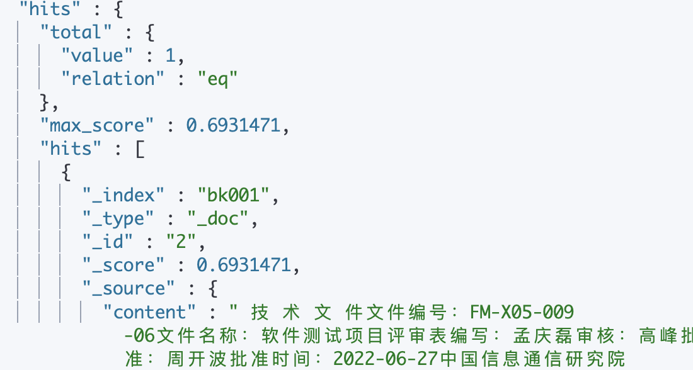

| es概念 | 数据库概念 | 说明 |
|---|---|---|
| 索引 | 数据库 | ES中可以有多个索引库，就像Mysql中有多个Database一样。 |
| 类型 | 表 | mysql中database可以有多个table，table用来约束数据结构。而ES中的每个索引库中只有一个类型，类型中用来约束字段属性的叫做映射(mapping) |
| 映射 | 表的字段约束 | mysql表对字段有约束，ES中叫做映射，用来约束字段属性，包括：字段名称、数据类型等信息 |
| 文档 | 行 | 存入索引库原始的数据，比如每一条商品信息，就是一个文档。对应mysql中的每行数据 |
| 字段 | 列 | 文档中的属性，一个文档可以有多个属性。就像mysql中一行数据可以有多个列。 |
1. ES的索引库操作
按照Rest风格，增删改查分别使用：POST、DELETE、PUT、GET等请求方式，路径一般是资源名称。因此索引库操作的语法类似。
1.1创建索引库
创建索引库的请求格式：
- 请求方式：PUT
- 请求路径：/索引库名
- settings：就是索引库设置，其中可以定义索引库的各种属性，目前我们可以不设置，都走默认。
put /索引库名
{
"settings": {
"属性名": "属性值"
}
}1.2查询索引库
返回的信息是JSON格式，其中包含这么几个属性：
- mappings：类型映射，目前我们没有给索引库设置映射
- settings：索引库配置，目前是默认配置
1.3总结
索引库操作：
- 创建索引库： PUT /库名称
- 查询索引库： GET /索引库名称
- 删除索引库： DELETE /索引库名称
2. 类型映射
MySQL中有表，并且表中有对字段的约束，对应到elasticsearch中就是类型映射mapping.
2.1 映射属性
索引库数据类型是松散的，不过也需要我们指定具体的字段及字段约束信息。而约束字段信息的就叫做映射（mapping）。
2.2 数据类型
elasticsearch提供了非常丰富的数据类型：
比较常见的有：
string类型，又分两种：
text：可分词，存储到elasticsearch时会根据分词器分成多个词条
keyword：不可分词，数据会完整的作为一个词条
Numerical：数值类型，分两类
基本数据类型：long、interger、short、byte、double、float、half_float
浮点数的高精度类型：scaled_float
需要指定一个精度因子，比如10或100。elasticsearch会把真实值乘以这个因子后存储，取出时再还原。
Date：日期类型
Object：对象，对象不便于搜索。因此ES会把对象数据扁平化处理再存储。
2.3 创建类型映射
我们可以给一个已经存在的索引库添加映射关系，也可以创建索引库的同时直接指定映射关系。
2.3.1 索引库已经存在
我们假设已经存在一个索引库，此时要给索引库添加映射。
PUT /索引库名/_mapping
{
"properties": {
"字段名1": {
"type": "类型",
"index": true，
"analyzer": "分词器"
},
"字段名2": {
"type": "类型",
"index": true，
"analyzer": "分词器"
},
...
}
}类型名称：就是前面将的type的概念，类似于数据库中的表 字段名：任意填写，下面指定许多属性，例如：
- type：类型，可以是text、long、short、date、integer、object等
- index：是否参与搜索，默认为true
- analyzer：分词器
2.3.2 索引库不存在
如果一个索引库是不存在的，我们就不能用上面的语法，而是这样：
PUT /索引库名
{
"mappings":{
"properties": {
"字段名1": {
"type": "类型",
"index": true，
"analyzer": "分词器"
},
"字段名2": {
"type": "类型",
"index": true，
"analyzer": "分词器"
},
...
}
}
}2.4 查看映射关系
查看使用Get请求
3.Java操作ES
3.1 Java连接ES
添加依赖
<!--Elasticsearch依赖-->
<dependency>
<groupId>org.elasticsearch</groupId>
<artifactId>elasticsearch</artifactId>
<version>7.10.2</version>
</dependency>
<!--Elasticsearch client依赖-->
<dependency>
<groupId>org.elasticsearch.client</groupId>
<artifactId>elasticsearch-rest-high-level-client</artifactId>
<version>7.10.2</version>
</dependency>
<!--使用lombok简化开发-->
<dependency>
<groupId>org.projectlombok</groupId>
<artifactId>lombok</artifactId>
</dependency>
<!--Junit依赖-->
<dependency>
<groupId>junit</groupId>
<artifactId>junit</artifactId>
<scope>4.12</scope>
</dependency>创建Client类
public class EsClient {
public static RestHighLevelClient getClient(){
//1：创建HttpHost对象
HttpHost httpHost = new HttpHost("192.168.70.118",9200);
//2：创建RestClientBuilder对象
RestClientBuilder restClientBuilder = RestClient.builder(httpHost);
//3：创建RestHighLevelClient对象
RestHighLevelClient restHighLevelClient = new RestHighLevelClient(restClientBuilder);
return restHighLevelClient;
}
}测试
@Test
public void testConnect(){
RestHighLevelClient restHighLevelClient = EsClient.getClient();
System.out.println("ok");
}3.2 Java操作索引
1. 创建索引
- 准备settings设置，如：分片数和副本数量
- 准备mappings设置，注意用startObject 和 endObject成对出现
- 将设置封装在一个request中，每个操作的request都不同
- 通过client对象连接es，提交请求。
CreateIndexRequest
@Test
public void createIndex() throws IOException {
//1.准备索引的settings设置
Settings.Builder settings = Settings.builder()
.put("number_of_shards", 3)
.put("number_of_replicas", 1);
//2.准备索引结构，mappings
XContentBuilder mappings = JsonXContent.contentBuilder()
.startObject()
.startObject("properties")
.startObject("content")
.field("type", "text")
.endObject()
.startObject("author")
.field("type", "keyword")
.endObject()
.endObject()
.endObject();
//3.将settings和mappings封装在一个request中
CreateIndexRequest request = new CreateIndexRequest(index)
.settings(settings)
.mapping(mappings);
//4.通过Client对象连接es，创建索引
CreateIndexResponse response = client.indices().create(request, RequestOptions.DEFAULT);
//5.输出测试
System.out.println("resp:" + response);
}2. 判断索引是否存在
GetIndexRequest
@Test
public void exists() throws IOException {
//1；准备request对象
GetIndexRequest request = new GetIndexRequest(index);
//2：通过client操作
boolean exists = client.indices().exists(request, RequestOptions.DEFAULT);
//3；输出结果
System.out.println(exists);
}3. 删除索引
DeleteIndexRequest
@Test
public void delete() throws IOException {
//1：准备request对象
DeleteIndexRequest request = new DeleteIndexRequest(index);
//2：通过client对象执行
AcknowledgedResponse delete = client.indices().delete(request, RequestOptions.DEFAULT);
//3：获取返回结果
System.out.println(delete.isAcknowledged());
}3.3 Java添加文档
- 准备Json数据
- 准备一个request封装数据
- 使用Client对象执行
Json数据创建一个类对象封装，从Json中去出数据创建对象实例后生成Json字符串
package com.example.elasticsearch.demos.web.entity;
import com.fasterxml.jackson.annotation.JsonIgnore;
import lombok.AllArgsConstructor;
import lombok.Data;
import lombok.NoArgsConstructor;
@Data
@NoArgsConstructor
@AllArgsConstructor
public class Docx {
private String content;
private String author;
@JsonIgnore
private Integer id;
}IndexRequest
public class Demo3 {
ObjectMapper mapper = new ObjectMapper();
RestHighLevelClient client = EsClient.getClient();
String index = "bk001";
@Test
public void createDoc() throws IOException {
//1:准备json数据
File file = new File("/Users/philcai/IdeaProjects/elasticSearch/src/text.json");
String content= FileUtils.readFileToString(file,"UTF-8");
JSONObject jsonObject=new JSONObject(content);
Docx docx = new Docx(jsonObject.getString("content"),jsonObject.getString("author"),1);
String json = mapper.writeValueAsString(docx);
//ObjectMapper objectMapper = new ObjectMapper();
//JsonNode jsonNode = objectMapper.readTree(new File("/Users/philcai/IdeaProjects/elasticSearch/src/text.json"));
//System.out.println(jsonNode);
// 2：准备一个request对象封装json
IndexRequest request = new IndexRequest(index);
request.source(json, XContentType.JSON);
//
// //3：使用client对象执行
IndexResponse index = this.client.index(request, RequestOptions.DEFAULT);
}
}3.4 删除文档
DeleteRequest
@Test
public void testDelete() throws IOException {
//1:封装request对象
DeleteRequest deleteRequest = new DeleteRequest(index,"aEHMzY8BxgXGScnQGkd9");
//2：创建client执行请求
DeleteResponse delete = client.delete(deleteRequest, RequestOptions.DEFAULT);
//3：返回测试结果
System.out.println(delete.getResult().toString());
}3.5 修改文档
UpdateRequest
@Test
public void testUpdate() throws IOException {
//1:创建一个map，指定需要修改的内容
Map<String,Object> doc = new HashMap<>();
doc.put("author","王冰冰");
//2:创建一个request对象，封装数据
UpdateRequest request = new UpdateRequest(index,"1");
request.doc(doc);
//3：创建client对象执行
UpdateResponse update = client.update(request, RequestOptions.DEFAULT);
//4:返回测试结果
System.out.println(update.getResult().toString());
}3.6 Java批量操作文档
BulkRequest
@Test
public void bulkCreateDoc() throws IOException {
//1：准备多个json数据
Docx docx1 = new Docx("这是第一个文档","蔡鹏飞",1);
Docx docx2 = new Docx("这是第二个文档","王冰冰",2);
Docx docx3 = new Docx("这是第三个文档","流霞",3);
String json1 = mapper.writeValueAsString(docx1);
String json2 = mapper.writeValueAsString(docx2);
String json3 = mapper.writeValueAsString(docx3);
//2：创建Request对象，并将数据封装进去
BulkRequest bulkRequest = new BulkRequest()
.add(new IndexRequest(index,"_doc",docx1.getId().toString()).source(json1,XContentType.JSON))
.add(new IndexRequest(index,"_doc",docx2.getId().toString()).source(json2,XContentType.JSON))
.add(new IndexRequest(index,"_doc",docx3.getId().toString()).source(json3,XContentType.JSON));
//3：创建client对象执行操作
BulkResponse resp = client.bulk(bulkRequest, RequestOptions.DEFAULT);
//4：输出结果
System.out.println(resp.toString());
}DeleteRequest
@Test
public void deleteDoc() throws IOException {
//1：封装request对象
BulkRequest bulkRequest = new BulkRequest();
bulkRequest.add(new DeleteRequest(index,"2"));
bulkRequest.add(new DeleteRequest(index,"1"));
//2：新建client对象执行
BulkResponse responses = client.bulk(bulkRequest, RequestOptions.DEFAULT);
//3：测试结果
System.out.println(responses.toString());
}3.7 动态映射模板
3.7.1 基本语法
默认映射规则不一定符合我们的需求，我们可以按照自己的方式来定义默认规则。这就需要用到动态模板了。
# 动态模板
PUT hello3
{
"mappings": {
"properties": {
"title": {
"type": "text",
"analyzer": "ik_max_word"
}
},
"dynamic_templates": [
{
"strings": {
"match_mapping_type": "string",
"mapping": {
"type": "keyword"
}
}
}
]
}
}4. Term&terms查询
4.1. Term查询
term查询是完全匹配，搜索之前不会对搜索的关键字进行分词，直接对关键字进行匹配查询。
POST /bk001/_search
{
"from": 0,
"size": 5,
"query": {
"term": {
"author": {
"value": "软件测试项目评审表.docx"
}
}
}
}
获取到的内容是由两个hits数组包含的，需要进行遍历访问查询到的每个元素。通过getHits()实现
@Test
public void termQuery() throws IOException {
//1:创建Request对象
SearchRequest searchRequest = new SearchRequest(index);
//2：指定查询条件
SearchSourceBuilder builder = new SearchSourceBuilder();
builder.from(0);
builder.size(5);
builder.query(QueryBuilders.termQuery("author","软件测试项目评审表.docx"));
searchRequest.source(builder);
//3：执行查询，创建client对象提交request
SearchResponse resp = client.search(searchRequest, RequestOptions.DEFAULT);
//4：获取_source中的内容
for (SearchHit hit : resp.getHits().getHits()) {
Map<String, Object> result = hit.getSourceAsMap();
System.out.println(result);
}
}4.2. Terms查询
term和terms的查询机制是一样的，不会对关键字进行分词，直接对关键字进行匹配。
terms针对的是一个字段包含多个值的时候使用
terms: where pro = "Beijing" or pro = "Tianjin" or ...
# terms查询
POST /bk001/_search
{
"from": 0,
"size": 20,
"query": {
"terms": {
"author": [
"软件测试项目评审表.docx",
"软件测试记录模板.docx"
]
}
}
}
@Test
public void termsQuery() throws IOException {
//1：创建request对象
SearchRequest searchRequest = new SearchRequest(index);
//2：封装查询条件
SearchSourceBuilder builder = new SearchSourceBuilder();
builder.query(QueryBuilders.termsQuery("author","软件测试项目评审表.docx", "软件测试记录模板.docx"));
searchRequest.source(builder);
//3：创建client，提交request
SearchResponse resp = client.search(searchRequest, RequestOptions.DEFAULT);
//4：输出查找到的内容
for (SearchHit hit : resp.getHits()) {
System.out.println(hit.getSourceAsMap());
}
}4.3 match查询
match属于高层查询，根据字段不同自动采用不同的查询方式。
- 查询的是日期或者是数值的话，会将基于字符串查询的内容转换为日期或者数值对待
- 如果查询的内容不可分词，则match不会对关键字进行分词
- 查询的内容可一分词，match会对关键字进行分词，后去词库中进行查询
- match底层是多个term查询的结果
4.3.1. match_all查询
查询全部内容，
# match_all查询
POST /bk001/_search
{
"query": {
"match_all": {
}
}
}
//match_all
@Test
public void matchAll() throws IOException {
//1:创建request对象
SearchRequest request = new SearchRequest(index);
//2：指定查询条件
SearchSourceBuilder builder = new SearchSourceBuilder();
builder.query(QueryBuilders.matchAllQuery());
//ES默认只查询10条文件，需要通过size参数设置
builder.size(20);
request.source(builder);
//3：创建client对象提交request
SearchResponse resp = client.search(request, RequestOptions.DEFAULT);
//4:输出结果
for (SearchHit hit : resp.getHits().getHits()) {
System.out.println(hit.getSourceAsMap());
}
System.out.println(resp.getHits().getHits().length);
}4.3.2. match查询
指定一个field条件实现查询
# match查询
POST /bk001/_search
{
"query": {
"match": {
"content": "技术文件"
}
}
}
public void matchQuery() throws IOException {
//1:创建request对象
SearchRequest request = new SearchRequest(index);
//2：指定查询条件
SearchSourceBuilder builder = new SearchSourceBuilder();
builder.query(QueryBuilders.matchQuery("content", "高峰"));
request.source(builder);
//3：创建client对象提交request
SearchResponse resp = client.search(request, RequestOptions.DEFAULT);
for (SearchHit hit : resp.getHits().getHits()) {
System.out.println(hit.getSourceAsMap());
}
System.out.println(resp.getHits().getHits().length);
//4：获取查询到的内容
}4.3.3. 布尔match查询
基于field的内容，采用and 或者 or的方式连接
# bool match查询
POST /bk001/_search
{
"query": {
"match": {
"content":{
"query": "高峰 孟庆磊",
"operator": "and"
}
}
}
}
POST /bk001/_search
{
"query": {
"match": {
"content":{
"query": "高峰 孟庆磊",
"operator": "or"
}
}
}
}
public void boolMatch() throws IOException {
//1:创建request对象
SearchRequest request = new SearchRequest(index);
//2：指定查询条件
SearchSourceBuilder builder = new SearchSourceBuilder();
builder.query(QueryBuilders.matchQuery("content", "高峰 孟庆磊").operator(Operator.AND));
request.source(builder);
//3：创建client对象提交request
SearchResponse resp = client.search(request, RequestOptions.DEFAULT);
//4：获取查询到的内容
for (SearchHit hit : resp.getHits().getHits()) {
System.out.println(hit.getSourceAsMap());
}
System.out.println(resp.getHits().getHits().length);
}4.3.4. multi_match查询
match针对一个field做检索， multi_match针对多个field进行检索，多个field对应一个text
POST /bk001/_search
{
"query": {
"multi_match": {
"query": "测试",
"fields": ["author","content"]
}
}
}
//multi_match
public void multiSearch() throws IOException {
//1:创建request对象
SearchRequest request = new SearchRequest(index);
//2：指定查询条件
SearchSourceBuilder builder = new SearchSourceBuilder();
builder.query(QueryBuilders.multiMatchQuery("测试", "author","content"));
request.source(builder);
//3：创建client对象提交request
SearchResponse resp = client.search(request, RequestOptions.DEFAULT);
//4：获取查询到的内容
for (SearchHit hit : resp.getHits().getHits()) {
System.out.println(hit.getSourceAsMap());
}
System.out.println(resp.getHits().getHits().length);
}5. 其他查询
5.1. id查询
#id 查询
GET /bk001/_doc/1
public void findById() throws IOException {
//1:创建GetRequest
GetRequest request = new GetRequest(index,"1");
//2：创建client执行查询结果
GetResponse response = client.get(request, RequestOptions.DEFAULT);
//3：输出结果
System.out.println(response.getSourceAsMap());
}5.2. ids查询
根据多个id查询，类似Mysql中的where id in (id1, id2, id3)
#ids 查询
POST /bk001/_search
{
"query": {
"ids": {
"values": ["1","2"]
}
}
}
public void findByIds() throws IOException {
//1:创建search request对象
SearchRequest request = new SearchRequest(index);
//2：指定查询条件
SearchSourceBuilder builder = new SearchSourceBuilder();
builder.query(QueryBuilders.idsQuery().addIds("1","2"));
request.source(builder);
//3：创建client对象执行查询
SearchResponse response = client.search(request, RequestOptions.DEFAULT);
//4：获取查询到的结果
for (SearchHit hit : response.getHits().getHits()) {
System.out.println(hit.getSourceAsMap());
}
}5.3. prefix查询
通过关键字指定一个field的前缀，从而查询到指定的内容
#prefix查询
POST /bk001/_search
{
"query": {
"prefix": {
"author": {
"value": "软件"
}
}
}
}
public void findByPrefix() throws IOException {
//1:构建request对象
SearchRequest request = new SearchRequest(index);
//2：指定查询条件
SearchSourceBuilder builder = new SearchSourceBuilder();
builder.query(QueryBuilders.prefixQuery("author","软件"));
request.source(builder);
//3：创建client对象，提交查询
SearchResponse response = client.search(request, RequestOptions.DEFAULT);
//4：返回查询内容
for (SearchHit hit : response.getHits().getHits()) {
System.out.println(hit.getSourceAsMap());
}
}5.4. fuzzy查询
模糊查询，输入字符的大概，ES根据输入的内容匹配结果，查询结果不稳定
#fuzzy 查询
POST /bk001/_search
{
"query": {
"fuzzy": {
"author": {
"value": "软件测是",
"prefix_length": 3 //前几个字符不可以出错
}
}
}
}
public void findByFuzzy() throws IOException {
//1:构建request对象
SearchRequest request = new SearchRequest(index);
//2：指定查询条件
SearchSourceBuilder builder = new SearchSourceBuilder();
builder.query(QueryBuilders.fuzzyQuery("author","软件").prefixLength(2));
request.source(builder);
//3：创建client对象，提交查询
SearchResponse response = client.search(request, RequestOptions.DEFAULT);
//4：返回查询内容
for (SearchHit hit : response.getHits().getHits()) {
System.out.println(hit.getSourceAsMap());
}
}5.5. wildcard查询
通配查询，和Mysql中的like一样，可以在查询语句中指定通配字符*和占位符？
#wildcard 查询
POST /bk001/_search
{
"query": {
"wildcard": {
"author": {
"value": "软件*"
}
}
}
}
public void findByWildCard () throws IOException {
//1:构建request对象
SearchRequest request = new SearchRequest(index);
//2：指定查询条件
SearchSourceBuilder builder = new SearchSourceBuilder();
builder.query(QueryBuilders.wildcardQuery("author","软件*"));
request.source(builder);
//3：创建client对象，提交查询
SearchResponse response = client.search(request, RequestOptions.DEFAULT);
//4：返回查询内容
for (SearchHit hit : response.getHits().getHits()) {
System.out.println(hit.getSourceAsMap());
}
}5.6. range查询
范围查询，只针对数值类型，对某一个field进行大于小于的范围查询
#range查询
POST /bk001/_search
{
"query": {
"range": {
"author": {
"gte": 10,
"lte": 20
}
}
}
}
public void findByRange() throws IOException {
//1:构建request对象
SearchRequest request = new SearchRequest(index);
//2：指定查询条件
SearchSourceBuilder builder = new SearchSourceBuilder();
builder.query(QueryBuilders.rangeQuery("author").gt(5).lt(10));
request.source(builder);
//3：创建client对象，提交查询
SearchResponse response = client.search(request, RequestOptions.DEFAULT);
//4：返回查询内容
for (SearchHit hit : response.getHits().getHits()) {
System.out.println(hit.getSourceAsMap());
}
}5.7. regexp查询
正则查询，通过正则表达式匹配内容。
prefix, wildcard，regexp查询效率较低
#regexp查询
POST /bk001/_search
{
"query": {
"regexp": {
"phone": "180[0-9]{8}" //180开头的手机号
}
}
}
public void findByRegexp() throws IOException {
//1:构建request对象
SearchRequest request = new SearchRequest(index);
//2：指定查询条件
SearchSourceBuilder builder = new SearchSourceBuilder();
builder.query(QueryBuilders.regexpQuery("phone","139[0-9]{8}"));
request.source(builder);
//3：创建client对象，提交查询
SearchResponse response = client.search(request, RequestOptions.DEFAULT);
//4：返回查询内容
for (SearchHit hit : response.getHits().getHits()) {
System.out.println(hit.getSourceAsMap());
}
} 5.8. 深分页Scroll
ES对from+size 是有限制的，from和size二者之和不能超过1w
from + size原理：
- ES的数据查询方式，第一步先将用户指定的关键字分词
- 将分词后的词语去匹配词库得到多个文章的id
- 去各个分片中拉取指定的数据
- 将拉取的数据按照score排序
- 根据from的值将查询到的值舍弃一部分
- 返回结果
scroll + size原理
- ES的数据查询方式，第一步先将用户指定的关键字分词
- 将分词后的词语去匹配词库得到多个文章的id
- 将文档的id存放在ES的上下文中
- 根据指定的size检索指定的数据，拿完文档数据的id，会从上下文中删除
- 需要下一页时，直接去上下文中寻找后续内容
- 循环第四第五步
Scroll不适合实时查询
#执行scroll查询，返回第一页数据，并将文档id存放在ES上下文中，设置上下文生存时间
#scroll查询
POST /bk001/_search?scroll=1m
{
"query": {
"match_all": {}
},
"size": 2,
"sort": [
{
"fee": {
"order": "desc"
}
}
]
}
#紧接着查寻第二页
POST /_search/scroll
{
"scroll_id" : "<根据第一步得到的scroll_id码>",
"scroll" : "1m"
}
# 删除scroll上下文的数据
DELETE /_search/scroll/scroll_id
public void scrollQuery() throws IOException {
//1:创建Search request
SearchRequest request = new SearchRequest(index);
//2：指定scroll信息
request.scroll(TimeValue.timeValueMinutes(1L));
//3：指定查询条件
SearchSourceBuilder builder = new SearchSourceBuilder();
builder.size(4);
builder.sort("fee", SortOrder.ASC);
builder.query(QueryBuilders.matchAllQuery());
request.source(builder);
//4：获取返回结果，scroll_id和source内容
SearchResponse response = client.search(request, RequestOptions.DEFAULT);
String scrollId = response.getScrollId();
System.out.println("-------分割线--------");
for (SearchHit hit : response.getHits().getHits()) {
System.out.println(hit.getSourceAsMap());
}
while (true){
//5：循环---创建search scroll request对象
SearchScrollRequest scrollRequest = new SearchScrollRequest(scrollId);
//6：指定scroll_id
scrollRequest.scroll(TimeValue.timeValueMinutes(1L));
//7：执行查询返回结果
SearchResponse scroll = client.scroll(scrollRequest, RequestOptions.DEFAULT);
//8：判断是否查询到了数据，输出or停止---退出循环
SearchHit[] searchHits = scroll.getHits().getHits();
if (searchHits.length > 0 && searchHits != null) {
System.out.println("-----------下一页------------");
for(SearchHit hit : searchHits){
System.out.println(hit.getSourceAsMap());
}
}else {
System.out.println("----------结束-----------");
break;
}
}
//9：创建clear scroll request对象
ClearScrollRequest clearScrollRequest = new ClearScrollRequest();
//10：指定scroll_id
clearScrollRequest.addScrollId(scrollId);
//11:删除scroll_id
ClearScrollResponse clearScrollResponse = client.clearScroll(clearScrollRequest, RequestOptions.DEFAULT);
//12:删除结果
System.out.println("删除scrollId" + clearScrollResponse.isSucceeded());
}5.9. delete-by-query
根据term，match等查询方式删除大量的文档
如果需要删除的内容是大部分数据，不推荐，推荐创建一个全新的索引，将保留的文档内容添加到全新的索引
# delete-by-query
POST /bk001/_delete_by_query
{
"query":{
"match_all": {
}
}
}
public void deleteByQuery() throws IOException {
//1:创建deletebyquery对象
DeleteByQueryRequest request = new DeleteByQueryRequest(index);
//2：指定检索条件 与searchrequest指定条件是不同的
request.setQuery(QueryBuilders.matchAllQuery());
//3：执行删除
BulkByScrollResponse response = client.deleteByQuery(request, RequestOptions.DEFAULT);
//4：返回删除结果
System.out.println(response.toString());
}5.10. 复合查询
5.10.1. bool查询
复合过滤器，将多个查询条件，以一定的逻辑组合在一起
- must：所有的条件，相当于and的意思
- must_not：对其条件全部都不匹配，相当于not
- should：相当于or的意思
#bool查询
POST /bk001/_search
{
"query": {
"bool": {
"should": [
{
"term": {
"author": {
"value": "cpf"
}
}
},
{
"term": {
"author": {
"value": "sys"
}
}
}
],
"must_not": [
{
"term": {
"content": {
"value": "开发"
}
}
}
],
"must": [
{
"match": {
"content": "阴阳"
}
},
{
"match": {
"content": "太极"
}
}
]
}
}
}public void boolQuery() throws IOException {
//1:创建searchrequest对象
SearchRequest request = new SearchRequest(index);
//2：指定查询条件
SearchSourceBuilder builder = new SearchSourceBuilder();
BoolQueryBuilder boolQuery = new BoolQueryBuilder();
boolQuery.should(QueryBuilders.termQuery("author","cpf"));
boolQuery.should(QueryBuilders.termQuery("author","sys"));
boolQuery.mustNot(QueryBuilders.termQuery("content","开发"));
boolQuery.must(QueryBuilders.matchQuery("content","测试"));
builder.query(boolQuery);
request.source(builder);
//3：提交查询
SearchResponse response = client.search(request, RequestOptions.DEFAULT);
//4：输出结果
for (SearchHit hit : response.getHits().getHits()) {
System.out.println(hit.getSourceAsMap());
}
}5.11. boosting查询
boosting查询可以帮助我们影响查询后的score
- positive：只有匹配上positive的内容，才会被放到返回的结果集中
- negative：如果pos和neg都匹配上了，则降低文档的score
- negative_boost：指定系数，必须小于1
分数如何计算
- 关键字出现的频次越高，分数越高
- 指定的文档内容越短，分数就越高
- 在搜索时，通过关键字的分词，对分词的内容匹配的越多，分数越高
#boosting查询
POST /bk001/_search
{
"query": {
"boosting": {
"positive": {
"match": {
"content": "测试报告"
}
},
"negative": {
"match": {
"content":"高峰"
}
},
"negative_boost": 0.2
}
}
}
public void boostingQuery() throws IOException {
//1:创建searchrequest对象
SearchRequest request = new SearchRequest(index);
//2：指定查询条件
SearchSourceBuilder builder = new SearchSourceBuilder();
BoostingQueryBuilder boost = QueryBuilders.boostingQuery(
QueryBuilders.matchQuery("content", "测试报告"),
QueryBuilders.matchQuery("content", "高峰")
).negativeBoost(0.5f);
builder.query(boost);
request.source(builder);
//3：提交查询
SearchResponse response = client.search(request, RequestOptions.DEFAULT);
//4：输出结果
for (SearchHit hit : response.getHits().getHits()) {
System.out.println(hit.getSourceAsMap());
}
}5.12. filter查询
query：根据条件，计算文档的匹配度得到一个分数，并根据分数进行排序，不会做缓存
filter：根据条件查询但是不计算文档的分数，且filter会对经常被过滤的数据进行缓存
#filter 查询
POST /bk001/_search
{
"query": {
"bool": {
"filter": [
{
"term": {
"content": "测试报告"
}
}
]
}
}
}
public void filterQuery() throws IOException {
//1:创建searchrequest对象
SearchRequest request = new SearchRequest(index);
//2：指定查询条件
SearchSourceBuilder builder = new SearchSourceBuilder();
BoolQueryBuilder boolQueryBuilder = new BoolQueryBuilder();
boolQueryBuilder.filter(QueryBuilders.termQuery("content","测试报告"));
builder.query(boolQueryBuilder);
request.source(builder);
//3：提交查询
SearchResponse response = client.search(request, RequestOptions.DEFAULT);
//4：输出结果
for (SearchHit hit : response.getHits().getHits()) {
System.out.println(hit.getSourceAsMap());
}
}POST /bk001/_search
{
"aggs":{
"name":{
"agg_type":{
"属性":"值"
}
}
}
}7. 聚合查询
7.1. 去重计数查询
Cardinality，第一步先将返回的文档中的指定的field进行去重，统计有多少条。
#聚合查询
POST /bk001/_search
{
"aggs": {
"agg": {
"cardinality": {
"field": "author"
}
}
}
}
public void cadinality() throws IOException {
//1:创建request
SearchRequest request = new SearchRequest(index);
//2：指定查询方式
SearchSourceBuilder builder = new SearchSourceBuilder();
builder.aggregation(AggregationBuilders.cardinality("agg").field("author"));
request.source(builder);
//3：执行查询
SearchResponse response = client.search(request, RequestOptions.DEFAULT);
//4：返回查询结果
//向下转型，cardinality继承aggregation接口，要获取value值需要将agg转为car，实现方法
Cardinality agg = response.getAggregations().get("agg");
long value = agg.getValue();
System.out.println(value);
}7.2. 范围统计
统计一定范围内出现的文档个数
范围统计可以针对数值 range、时间类型date_range、IP类型ip_range做相应的统计。
数值统计
#数值范围统计
POST /bk001/_search
{
"aggs": {
"agg": {
"range": {
"field": "fee",
"ranges": [
{
#to 不带等于,表示从最小到5
"to": 5
},
{
#from 带等于，表示从50开始
"from": 50,
"to": 100
},
{
"from": 100
}
]
}
}
}
}时间统计
#时间范围统计
POST /bk001/_search
{
"aggs": {
"agg": {
"date_range": {
"field": "createDate",
"format": "yyyy-MM-dd",
"ranges": [
{
"to": "2000-01-01"
},
{
"from":"2001-02-02"
}
]
}
}
}
}IP统计方式
#IP统计
POST /bk001/_search
{
"aggs": {
"agg": {
"ip_range": {
"field": "IP",
"ranges": [
{
"from": "10.0.0.5",
"to": "10.0.0.10"
}
]
}
}
}
}7.3. 统计聚合查询
可以查询一个field的最大值，最小值，平均值，平方和等
extended_stats
#统计聚合查询
POST /bk001/_search
{
"aggs": {
"agg": {
"extended_stats": {
"field": "fee"
}
}
}
}
public void extendedStats() throws IOException {
//1:创建request
SearchRequest request = new SearchRequest(index);
//2：指定查询方式
SearchSourceBuilder builder = new SearchSourceBuilder();
builder.aggregation(AggregationBuilders.extendedStats("agg").field("fee"));
request.source(builder);
//3：执行查询
SearchResponse response = client.search(request, RequestOptions.DEFAULT);
//4：返回查询结果
ExtendedStats agg = response.getAggregations().get("agg");
double max = agg.getMax();
double min = agg.getMin();
System.out.println("Max:" + max + "Min:" + min);
}8. 搜索结果高亮显示
以一定的特殊样式显示搜索的关键词
高亮展示的内容本身是文档的一个field，单独将field以highlight的形式返回
ES提供一个highlights属性，和query是同级别的
- fragment_size：指定高亮数据展示多少个字符，默认100个
- pre_tags：指定前缀标签
- post_tags：指定后缀标签
- fields：指定哪几个field返回
#highlight
POST /bk001/_search
{
"query": {
"match": {
"content": "软件测试"
}
},
"highlight": {
"fields": {
"content": {},
},
"pre_tags": "<font color='red'>",
"post_tags": "</font>",
"fragment_size": "5"
}
}
public void highLightQuery() throws IOException {
//1:创建searchrequest对象
SearchRequest request = new SearchRequest(index);
//2：指定查询条件
SearchSourceBuilder builder = new SearchSourceBuilder();
builder.query(QueryBuilders.matchQuery("content","软件测试"));
//3:指定高亮
HighlightBuilder highlightBuilder = new HighlightBuilder();
highlightBuilder.field("content",10)
.preTags("<font color='red'>")
.postTags("</font>");
builder.highlighter(highlightBuilder);
request.source(builder);
//3：提交查询
SearchResponse response = client.search(request, RequestOptions.DEFAULT);
//4：获取高亮结果
for (SearchHit hit : response.getHits().getHits()) {
System.out.println(hit.getHighlightFields().get("content"));
}
}